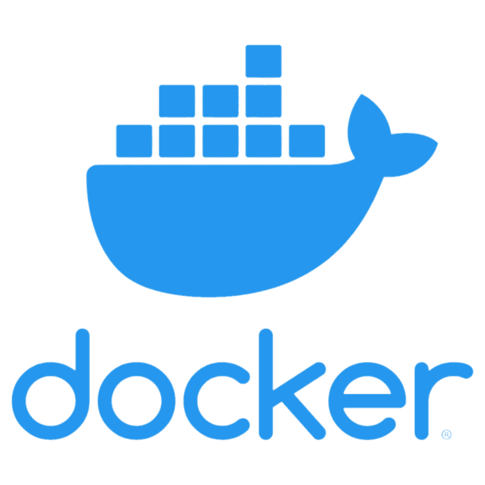
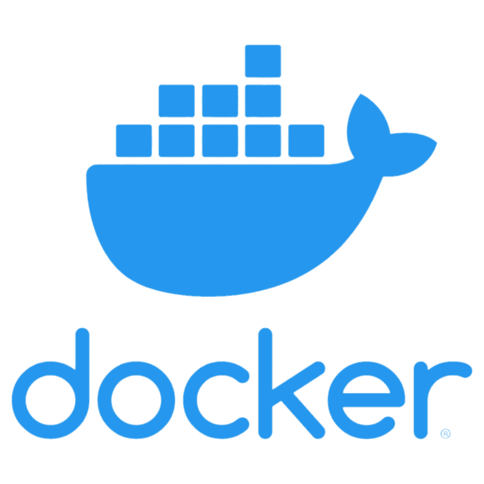

Dev Web


Design
Autre


 



Instant gaming
Nous avons développé un site inspiré d'Instant Gaming, débutant par la création d'une maquette adaptée aux mobiles, suivie de son intégration pour obtenir un site à la fois réactif et facile à utiliser. Pour assurer la responsivité du site, nous avons employé Bootstrap.
Site restaurant
Nous avons développé un site web fictif pour un restaurant, en utilisant HTML, CSS, et Bootstrap pour sa réalisation.
Crêpes tah les oufs
Nous avons conçu un site statique pour une entreprise de notre choix, avec une échéance de 3 jours pour la création de la maquette et du site en utilisant Symfony, ainsi que son hébergement sur Render. Ce projet constituait notre première expérience pratique avec Symfony, Docker et Twig.
Vidéothèque
Nous avons conçu une maquette puis développé un site de streaming pour films et séries en utilisant le framework Vue.js, en exploitant l'API TMDB pour alimenter notre contenu. De plus, nous avons enrichi le site avec des animations en JavaScript pour améliorer l'expérience utilisateur.
Location de vélo
Pendant une semaine, nous avons entrepris la conception et la réalisation d'un site web en PHP selon le modèle MVC dédié à la location de vélos. Ce projet incluait la gestion de la liste des vélos disponibles, la possibilité de louer un vélo en spécifiant l'heure et la date, la création sécurisée des comptes utilisateurs par les administrateurs avec chiffrement des mots de passe, la capacité pour les administrateurs de valider ou rejeter les demandes de location, la limitation de l'accès aux différentes pages en fonction du rôle de l'utilisateur, le tout avec une base de données MySQL pour assurer une gestion efficace des données.